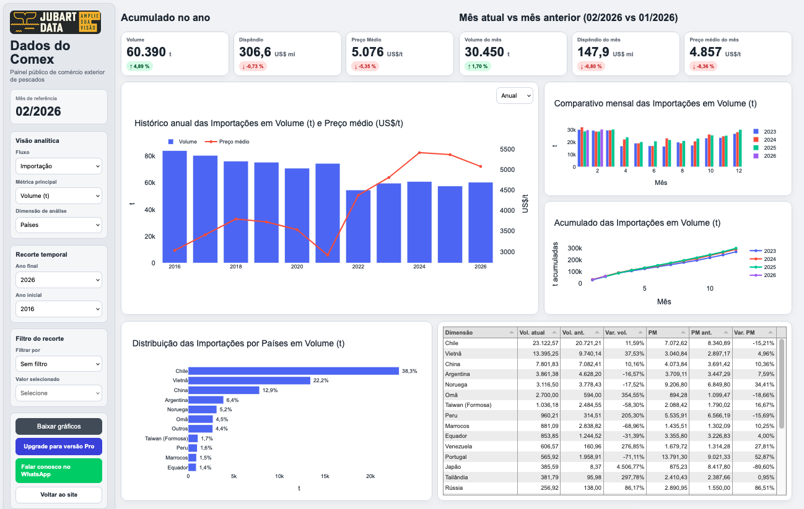
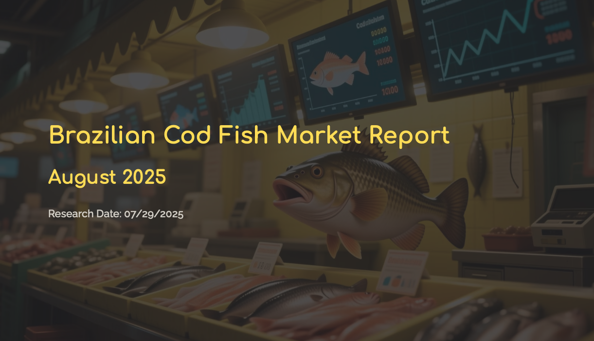
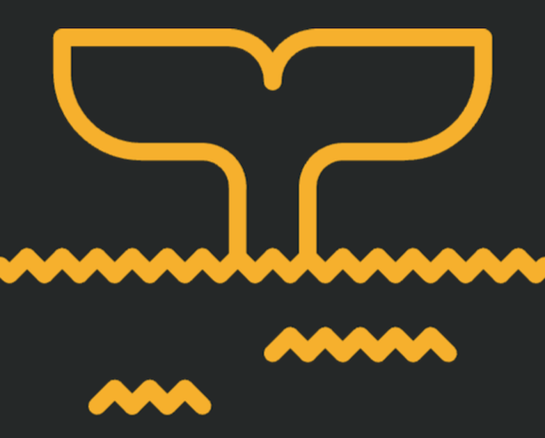

Dados estruturados
Organização analítica da informação para acompanhar fluxos, preços, comportamento competitivo e dinâmica setorial.
Inteligência de mercado aplicada
A Jubart combina dados estruturados, monitoramento recorrente, pesquisa qualitativa e análise do discurso para apoiar decisões em cadeias produtivas complexas.
A Jubart
A Jubart é uma empresa de inteligência de mercado voltada a cadeias produtivas marcadas por alta complexidade, baixa transparência e assimetrias relevantes de informação.
Combinamos dados, monitoramento e interpretação estratégica para transformar sinais dispersos em leitura aplicada, apoiando empresas, associações e lideranças setoriais em decisões mais consistentes.
Metodologia
Organização analítica da informação para acompanhar fluxos, preços, comportamento competitivo e dinâmica setorial.
Leitura contínua dos movimentos do mercado, com atenção a mudanças de contexto, reposicionamentos e sinais emergentes.
Escuta do setor para captar percepções, critérios de decisão e elementos que não aparecem apenas nos indicadores.
Leitura das narrativas e posicionamentos dos agentes como ferramenta para qualificar a interpretação e apoiar decisões.
Destaque principal
A plataforma analítica da Jubart para o comércio exterior brasileiro de pescado
O Painel do Pescado organiza dados de comércio exterior em uma interface analítica desenvolvida para ampliar a capacidade de leitura do setor. A ferramenta permite acompanhar fluxos, espécies, origens e evolução histórica do mercado, apoiando análises recorrentes e decisões mais consistentes.
Desenvolvido a partir da experiência da Jubart no pescado, o painel também sinaliza uma direção estratégica maior: a aplicação dessa mesma base metodológica a outras cadeias produtivas.

Relatórios e soluções
Ferramentas desenvolvidas para organizar dados, acompanhar movimentos de mercado e apoiar leitura estratégica recorrente.
Estudos aplicados para aprofundar temas específicos, com foco em preços, concorrência, comportamento do varejo e dinâmica setorial.
Publicações periódicas voltadas ao acompanhamento de preços, dispersão regional, comportamento promocional e sinais do mercado.
Integração entre dados, pesquisa qualitativa e interpretação estratégica para responder a desafios específicos de empresas, associações e lideranças setoriais.
Relatórios em destaque
Pescados em geral (tilápia, camarão, salmão, bacalhau e merluza) mas também outras proteínas como frango, ovos, carne bovina, bem como azeite, leite, cefé e cerveja.
Abaixo, apresentamos dois modelos de acompanhamento: relatórios semanais e relatórios sob encomenda.

Relatório sob encomenda
Exemplo de relatório desenvolvido sob encomenda, com foco em preços, dispersão regional, comportamento do varejo e posicionamento competitivo.

Relatório semanal
Exemplo de acompanhamento semanal com leitura de preços, comportamento promocional, dispersão regional e dinâmica do varejo brasileiro de pescado.
Clientes e impacto estratégico
A Jubart já apoiou projetos estratégicos em empresas relevantes do setor, combinando dados, escuta de mercado e leitura analítica para orientar posicionamento, captura de valor e expansão.
Projeto estratégico para leitura do mercado brasileiro de salmão, com foco em formação de preços, segmentação de canal, reputação e condições estruturais para liderança.
“O estudo feito pela JubartData foi determinante para estruturarmos nossa presença no Brasil.”

Expansão metodológica
Desenvolvida e validada em mercados complexos como o pescado, a metodologia da Jubart foi concebida para dialogar com outras cadeias produtivas marcadas por dispersão de informação, baixa transparência e necessidade de leitura estratégica.
Mais do que monitorar indicadores, o papel da Jubart é reduzir opacidades, organizar sinais dispersos e ampliar a capacidade de decisão de seus clientes.
Aplicações da metodologia Jubart
A Jubart desenvolve relatórios, painéis e projetos sob medida para apoiar leitura estratégica em setores complexos. Para saber mais sobre nossos acompanhamentos e aplicações no seu setor, fale conosco via WhatsApp.